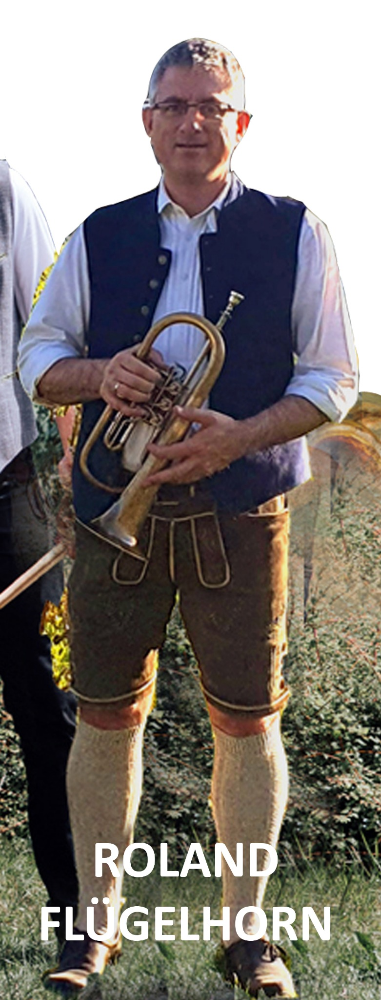
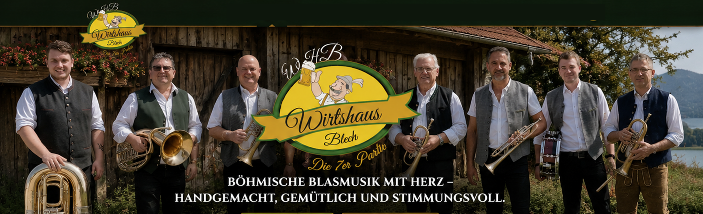
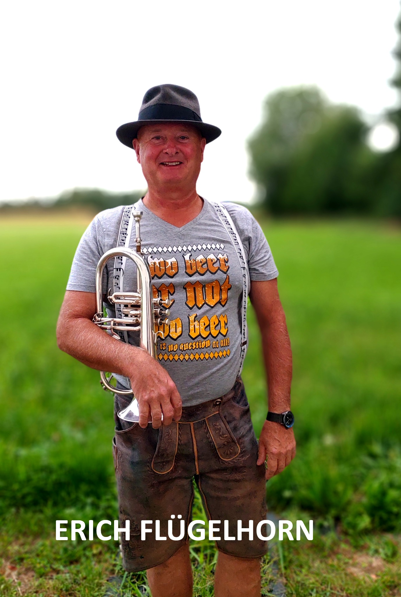
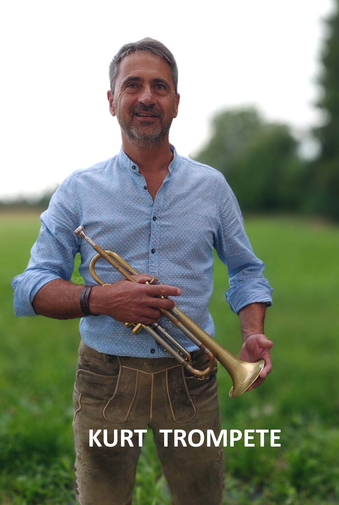
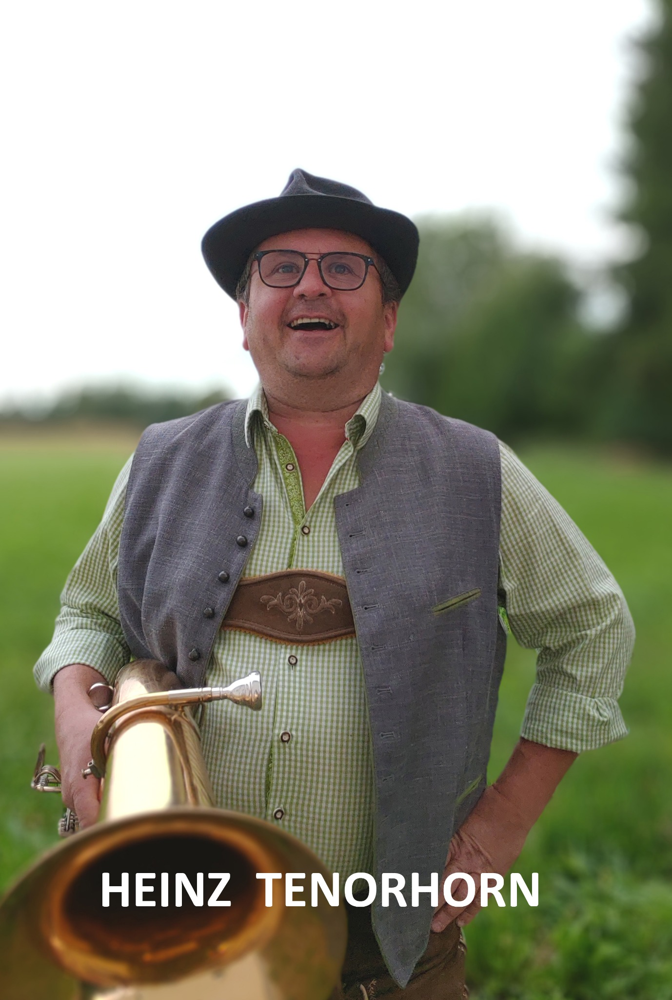
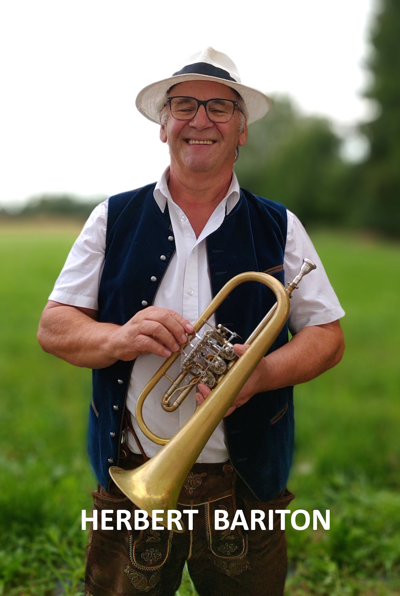
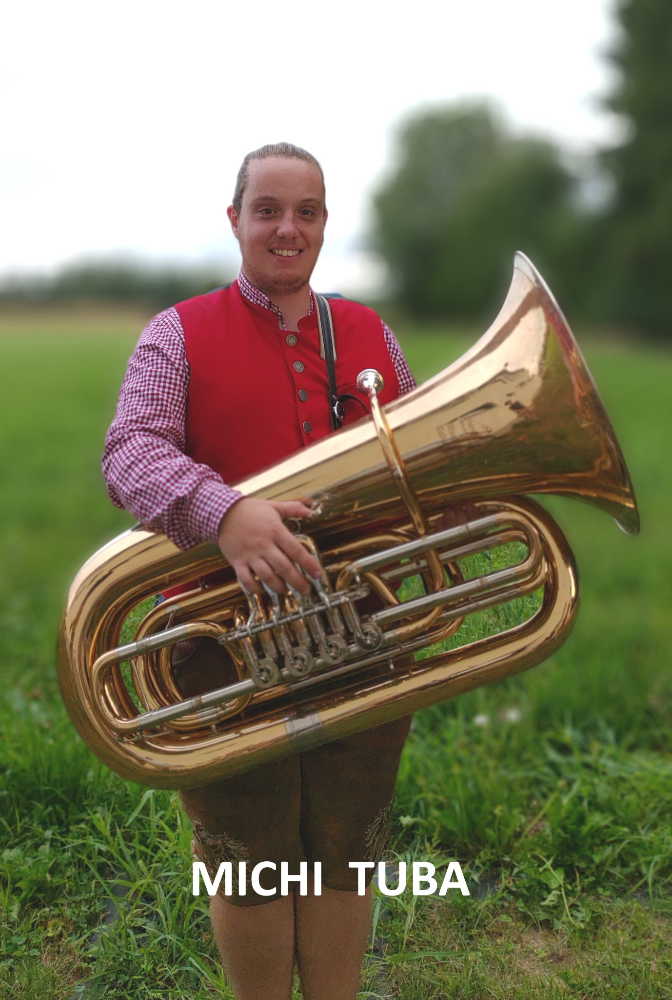
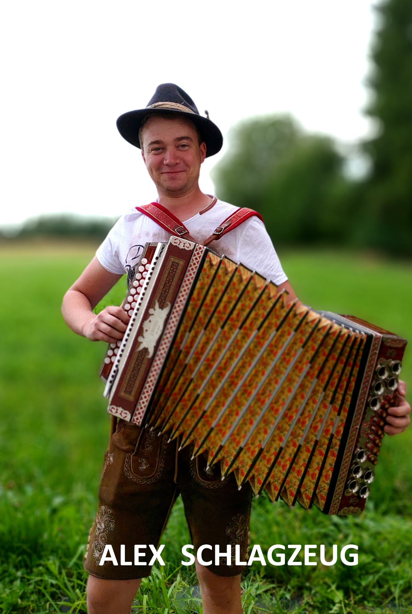

Roland
Flügelhorn

Böhmische Blasmusik · Innviertel
Sieben Musikanten, viel Herzblut und echte Wirtshausstimmung.
Auftritt anfragenServus und herzlich willkommen!
Wir sind die 7er Partie und stehen für böhmische Blasmusik, gemütliche Stimmung und ehrliche Musik mit Leidenschaft.
Unsere Besetzung

Flügelhorn

Flügelhorn

Trompete

Tenorhorn

Bariton

Tuba

Schlagzeug
Wo wir spielen
16.August 2026 - Kurkonzert Bad Griesbach, 20:00-21:00Uhr
Mittwoch. 9. September - Dämmerschoppen auf der Burgschänke Frauenstein, 19 : 00-22 : 00
Einblicke
Kontakt
Ob Dämmerschoppen, Frühschoppen, Fest oder gemütlicher Abend – schreibt oder ruft uns einfach an.